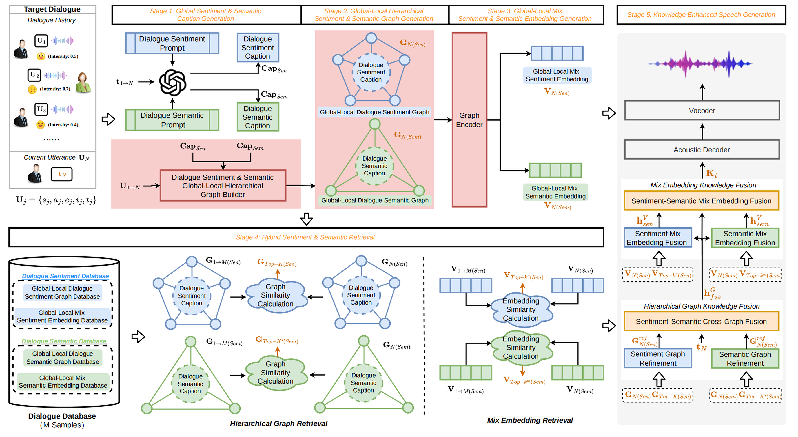

Retrieval-Augmented Dialogue Knowledge Aggregation for Expressive Conversational Speech Synthesis
†Corresponding author.
Abstract
Conversational Speech Synthesis (CSS) aims to generate speech with natural prosody and contextually coherent sentiment in multi-turn dialogues, where modeling sentiment dynamics is essential for high-quality generation. Existing approaches predominantly rely on continuous representations of dialogue history, which are inadequate for capturing structured semantic dependencies and fine-grained sentiment evolution, often resulting in structural misalignment between retrieved and current dialogues as well as limited interpretability. To address these challenges, we propose Graph-Talker, a structure-aware retrieval-augmented framework for sentiment-aware CSS. Specifically, we construct hierarchical multi-view dialogue graphs that organize conversations into semantic and sentiment views with global–local structures, and introduce dialogue-level semantic and sentiment captions as global constraint nodes to enhance structured representations. Building upon this, we design a hybrid retrieval strategy that jointly exploits graph structural signals and embedding similarity, along with a hierarchical fusion mechanism that incorporates retrieved knowledge as structural constraints, enabling coordinated modeling of semantic and sentiment information during speech generation. Experimental results demonstrate that Graph-Talker consistently improves sentiment consistency and speech naturalness over strong baselines, while providing an interpretable and extensible framework for structured sentiment modeling in CSS. Code and demos are available at: https://github.com/orangecwk/Graph.
Model Architecture

Figure 1: Overview of the Graph-Talker framework, comprising multi-view dialogue graph construction, hybrid graph-embedding retrieval, hierarchical fusion, and retrieval-augmented acoustic generation.
Experimental Results & Demo
Exploring the impact of our approach on expressive speech synthesis through comparative and ablation studies.
Comparative
| Dataset | Ground Truth | DailyTalk | M2-CTTS | Homogeneous Graph-based CSS |
CONCSS | ECSS | RADKA-CSS | Graph-Talker |
|---|---|---|---|---|---|---|---|---|
| DailyTalk | ||||||||
| NCSSD |
Ablation
| Dataset | Ablation 1 | Ablation 2 | Ablation 3 | Ablation 4 | Ablation 5 | Ablation 6 |
|---|---|---|---|---|---|---|
| DailyTalk | ||||||
| NCSSD |
BibTeX
@inproceedings{liu2024retrieval,
title={Retrieval-Augmented Dialogue Knowledge Aggregation for Expressive Conversational Speech Synthesis},
author={Liu, Rui and Cheng, Wenkai and Jia, Zhenqi},
booktitle={xxxxxxx},
year={2027},
publisher={IEEE}
}